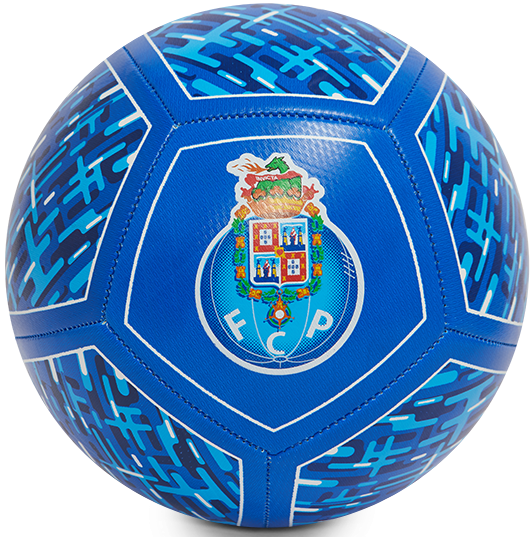
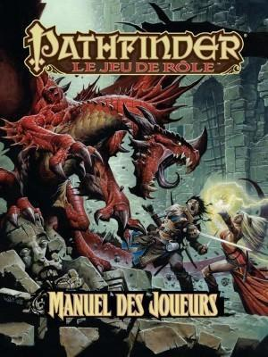

Parcours Scolaire
2025 - Stage chez Ubilink en tant qu'intégrateur de tests. J'ai pu y créer une plateforme de tests automatisée pour une application web en 3D.
2023 - 2025 2ème année validée en BUT Informatique à l'IUT 2 de Grenoble.
2023 - Bac avec Mention Bien au lycée Pierre Termier.
2020 - Brevet avec Mention Très Bien au collège Jules Vallès.
Soft Skills
Adaptabilité
Capacité à prendre en main très vite le code d'un projet créé par quelqu'un d'autre pour y ajouter du contenu ou y corriger les erreurs.
Passions

